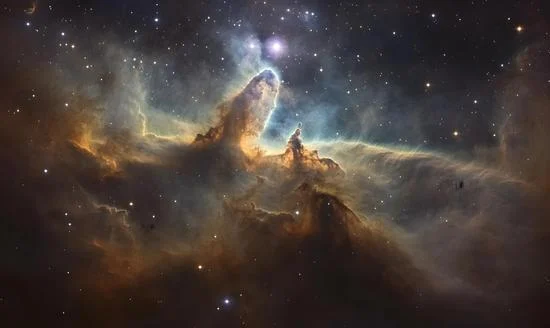

Explorez le système solaire
Explorez l’espace comme jamais auparavant — entre découvertes humaines, aventures interplanétaires et secrets mathématiques du cosmos.

Voir les biographies d’astronautes
Plongez dans le parcours de celles et ceux qui ont vécu l’aventure spatiale de l’intérieur.
Accéder aux biographies
Explorer les missions spatiales
Des premiers pas sur la Lune aux sondes perdues dans l’infini, explorez les missions qui ont repoussé les limites du possible.
Voir les missions
Comprendre les mathématiques de l’astronomie
Plongez dans les lois qui expliquent pourquoi les planètes tournent, comment les fusées décollent et comment on mesure l’immensité de l’espace.
Découvrir les notions